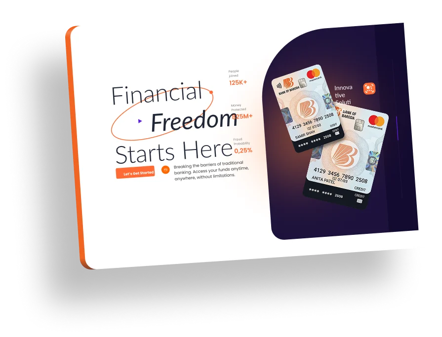
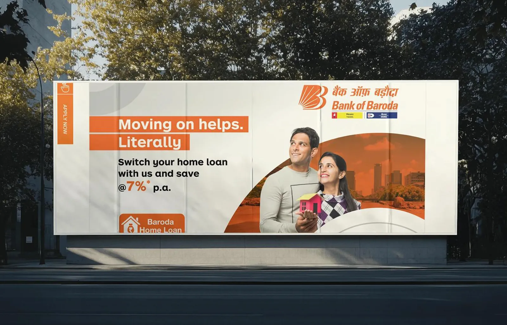
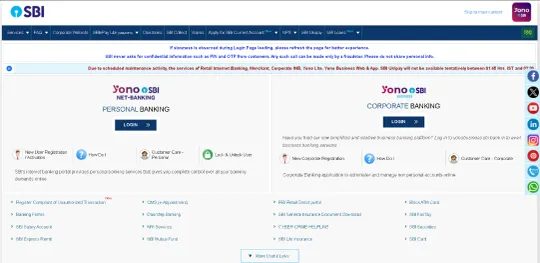
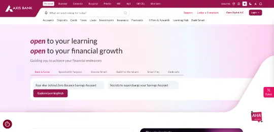
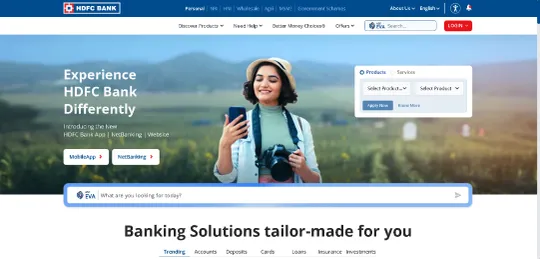
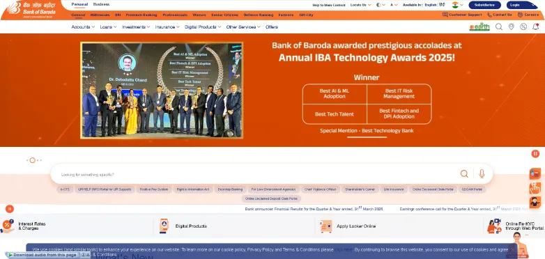
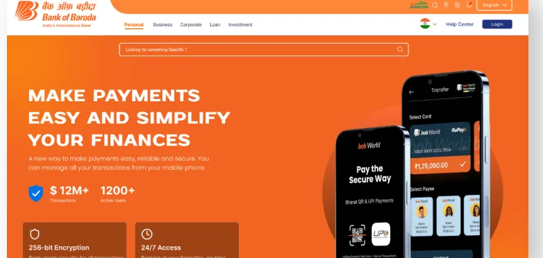
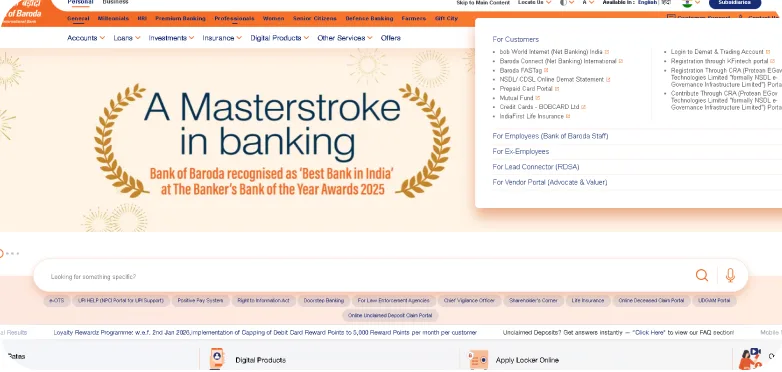
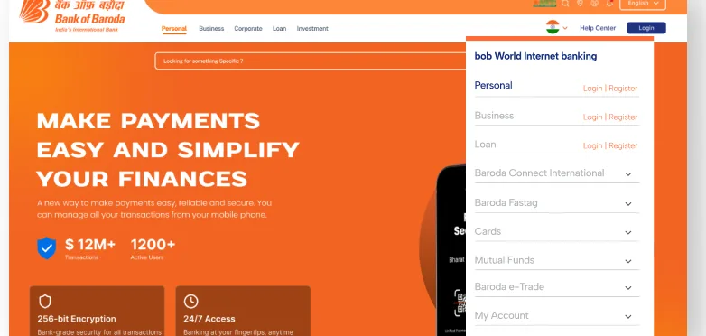

Key actions were buried
Loan details, FD rates and login sat 3–4 levels deep behind banners, floating buttons and long menus. First-time users had no guidance.
Case study · Usability testing → UI redesign
USABILITY TESTING
I tested the existing website against SBI, HDFC and Axis, found where users get lost, and redesigned the homepage, navigation, loan application and fixed-deposit flows around those problems.

The short version
Loan details, FD rates and login sat 3–4 levels deep behind banners, floating buttons and long menus. First-time users had no guidance.
Five loan tasks tested with three participants (ages 26–42), a benchmark against three competitor banks, a persona, and a heuristic + UX-law audit of five key screens.
A calmer homepage, grouped navigation, and stepper-based loan and FD flows that show rates, status and a full review before you commit.

Context
One of India’s largest public sector banks, second only to SBI in size and reach. Founded on 20 July 1908 by Maharaja Sayajirao Gaekwad III, it opened its first branch in Ahmedabad in 1910 and expanded to Kenya, Uganda, Tanzania and London in the 1950s.
It offers personal, corporate and NRI banking, which means its website serves a very wide range of people, from first-time account holders to experienced borrowers.
Identify usability problems in the existing Bank of Baroda website through user testing, and propose a redesigned interface that makes it simpler, clearer and easier to use.
Process
Step 1
Before redesigning anything, I benchmarked Bank of Baroda against leading public and private sector banks to find gaps in visual design, navigation structure and overall usability.



Unlike SBI, HDFC and Axis, BoB’s navigation is unclear, which makes finding a service difficult.
Competitor sites guide users with clear action priorities. BoB’s layout lacks direction.
Others use bold hero images with clear CTAs. BoB’s carousel lacks focus and engagement.
BoB’s typography and icons feel dated next to the cohesive design systems of competitors.
Step 2 · Usability test script
Three participants of different ages and comfort levels worked through home-loan tasks on the live website. Click a question to read what each of them said.
Step 3
Step 4 · Problems found
I audited five key screens against Nielsen’s heuristics and common UX laws. Pick a screen to see what breaks.
Step 5
Eight findings that shaped the redesign. The tag under each card shows where the new design answers it.
Usability testing → design decisions
Every change in the redesign traces back to something a participant struggled with in testing. Where I haven’t solved a problem yet, I say so.
Step 6
Two shallow trees replace the old maze: Loan and Investment, each ending in a 4-step guided process.
Orange marks the two paths prototyped below.
Step 7 · A/B comparison
High-fidelity designs with a clean, minimal aesthetic. Drag the handle to compare.


OldNew

OldNewFinal design
Two full pages from the redesign. Hover (or tap) a frame to scroll through it.
One focused hero, trust signals up front, and services grouped by intent.
Balance, quick actions, recent transactions and goals on one screen, with FD, RD and mutual funds a click away.
Step 8 · Interactive
Click the screen (or press → ) to move through each flow, the way a tester would. The panel shows my review notes for each step.
Round 1 tested the live website. Round 2 puts the redesigned prototype in front of five new participants, including at least two aged 40+, to check whether the changes above actually fixed the problems.
What’s next
My own review of the flows already flagged gaps. These are what I would test and fix next.
The Create FD screen doesn’t show the minimum or maximum amount. Add the range and inline validation.
Check contrast on the orange backgrounds, text size and keyboard order, since elderly and low-vision users struggled most.
Rename “Provisional Interest Certificate” to the words people search for, “Tax certificate”, with the formal name underneath.
Hiring for UX / product design?
I’m Govind Patel, a UI/UX designer in Pune. I’m pursuing an M.Des in UI/UX and previously designed e-learning experiences at Tata Technologies.
Concept project for my portfolio. Not affiliated with or endorsed by Bank of Baroda. Brand names and logos belong to their owners, and competitor screenshots are shown for research comparison.